Paramètres globaux¶
L’écran des paramètres globaux permet de configurer les paramètres de l’application.
Selon les modules installés, certains onglets peuvent ne pas apparaître.
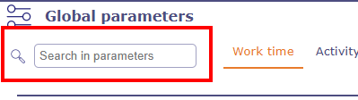
Rechercher dans les paramètres¶
Un champ de recherche vous permet de trouver les paramètres contenant le mot saisi.
Lorsque vous sélectionnez un paramètre, la recherche vous amène directement à l’onglet et à la section correspondants, et le paramètre est alors mis en surbrillance.
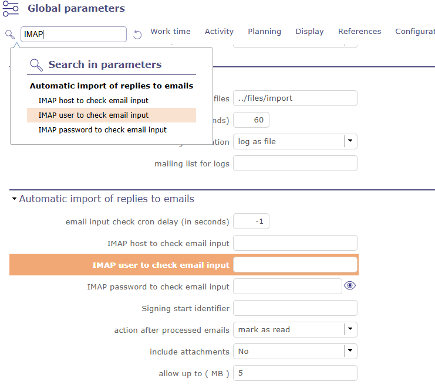
Affichage du résultat d’une recherche¶
Astuce
Bon à savoir
Passer la souris sur le libellé d’un paramètre affiche une info-bulle avec une description plus détaillée du paramètre.
Onglet Temps de travail¶
Heures de travail journalières¶
Définition des heures de travail appliquées dans votre entreprise.
Utilisé pour calculer le temps sur la base des « heures travaillées ».
Heures de travail par projet
Vous pouvez également appliquer des heures de travail spécifiques à chacun de vos projets en activant l’option heures de travail par projet.
Vous pouvez ensuite appliquer des heures de travail spécifiques dans l’écran du projet.
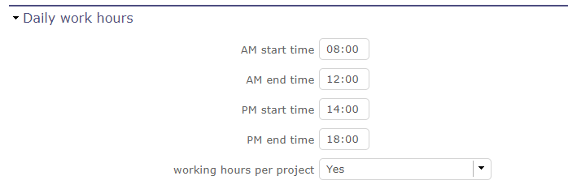
Écran Workflow¶
Jours ouvrés¶
Possibilité de définir les jours ouvrés dans l’entreprise.
Pour chaque jour de la semaine, vous pouvez choisir entre jours ouvrés et jours non ouvrés.
Voir aussi
Ressource section Calendriers
Note
Ce paramètre est pris en compte dans : les jours ouvrés des calendriers,
Les jours ouvrés pour le calcul et l’affichage, les jours ouvrés pour l’affichage de la saisie du travail réel.
Unités de travail¶
Paramètres permettant de déterminer les unités utilisées pour calculer le travail réel.
Unité pour les imputations (travail réel) & Unité pour la charge de travail
Paramètres pour la saisie du travail réel et la charge de travail.
Les champs Unité pour la saisie du travail réel et pour toutes les données de travail peuvent être exprimés en jours ou en heures.
Nombre d’heures par jour
Permet de définir le nombre d’heures par jour.
Avertissement
Si les deux valeurs sont différentes, des erreurs d’arrondi peuvent survenir.
Rappel : les données sont toujours stockées en jours.
La durée sera toujours affichée en jours, quelle que soit l’unité de charge de travail.
Imputations¶
Définit le comportement des tâches dans l’écran de saisie du travail réel.
Afficher uniquement les tâches démarrées
Afficher uniquement les tâches dont le Macro statut est activé.
Passer au premier statut « en cours »
Modifier le statut de la tâche vers le premier statut « en cours » lorsqu’un travail réel est saisi.
Passer au premier statut « terminé »
Modifier le statut de la tâche vers le premier statut « terminé » lorsqu’il ne reste plus de travail à effectuer.
Nombre maximum de jours pour saisir du travail (avertissement) :
Nombre de jours dans le futur durant lesquels l’utilisateur peut saisir du travail réel avant de recevoir un avertissement.
Laisser vide si vous ne souhaitez pas d’avertissement.
Ce paramètre ne s’applique pas aux projets administratifs.
Nombre maximum de jours pour saisir du travail (bloquant)
Nombre de jours dans le futur durant lesquels l’utilisateur peut saisir du travail réel. Cette limite est bloquante.
Laisser vide si vous ne souhaitez pas de blocage.
Ce paramètre ne s’applique pas aux projets administratifs.
Verrouiller les imputations avant la date de début validée
Dans les modes de planification « doit démarrer à la date validée » et « ne doit pas démarrer avant la date validée », il est possible de bloquer les feuilles d’imputations avant les dates de début validées saisies.
Alerter la ressource lors d’une saisie effectuée par quelqu’un d’autre
Alerter la ressource lorsqu’un travail réel est saisi par une autre personne.
Sélectionnez votre type d’alerte : Interne, E-mail, les deux ou aucun.
Alerte lors de l’annulation d’une imputation par une autre personne
Envoyer une alerte ou un e-mail lorsque des imputations sont annulées par une autre ressource.
Sélectionnez votre type d’alerte : Interne, E-mail, les deux ou aucun.
Afficher les pools sur les imputations
Permet d’afficher le pool auquel appartient la ressource.
Vous pouvez gérer différents paramètres de déclenchement par destinataire.
Avertissement
Les ressources n’ayant pas accès à l’écran des imputations ne reçoivent pas ces alertes.
Afficher le pool pour mettre à jour son travail restant
Cette option n’est accessible que si la précédente est définie sur non.
Lorsque les pools de ressources ne sont pas affichés dans les lignes d’affectation, une icône vous permet d’afficher au moins le reste à effectuer pour ceux-ci.

Ligne du pool¶
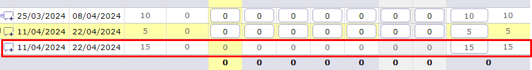
Ligne du pool¶
Cliquez sur
 pour afficher la ligne du pool de ressources et modifier le travail restant.
pour afficher la ligne du pool de ressources et modifier le travail restant.
Mise à jour automatique du travail restant sur le pool
Si une ressource du pool saisit du travail réel sur une tâche planifiable en son propre nom alors que son restant est à 0, le temps restant sur le pool sera décrémenté.
Après soumission, alerte au chef de projet
Après soumission, quel type d’alerte souhaitez-vous envoyer au chef de projet ?
Après soumission, alerte au responsable d’équipe
Après soumission, quel type d’alerte souhaitez-vous envoyer au responsable d’équipe ?
Après soumission, alerte au responsable de l’organisme
Après soumission, quel type d’alerte souhaitez-vous envoyer au responsable de l’organisme ?
Si une saisie est trop précoce, alerte au chef de projet
Si la ressource commence à saisir du travail réel sur une activité qui ne devrait pas démarrer à la date de cette saisie, le chef de projet peut recevoir une alerte, un e-mail, ou les deux.
Format de saisie des imputations
Semaine / Mois : Vous pouvez choisir entre un affichage par semaine ou par mois directement sur la feuille d’imputations à l’aide du bouton dédié.
Semaine : L’affichage sera uniquement par semaine.
Mois : L’affichage sera uniquement par mois. Attention, cet affichage peut poser des problèmes sur les écrans trop petits (< 15 pouces).
Masquer le bouton « Saisir le réel selon le planifié »
Définir si le remplissage automatique du travail planifié doit être affiché ou masqué.
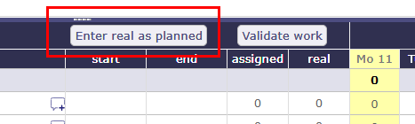
Saisir le réel selon le planifié sur l’écran des imputations¶
Afficher les éléments terminés dans les imputations
Choisir si les éléments au statut « terminé » doivent être affichés ou non sur les feuilles d’imputations.
Toujours afficher la recherche par nom
Le bouton bascule permet d’afficher en permanence le champ de recherche « nom » sur les formulaires d’imputations.
Un paramètre global vous permet d’activer cette fonction de façon permanente.
Onglet Activité¶
Tickets¶
Comportement spécifique pour la gestion des tickets
Seul le responsable travaille sur le ticket
Seul le responsable peut saisir du travail réel sur le ticket.
Responsable du ticket depuis le responsable du produit
Sélectionner si le responsable du produit est affiché (toujours, si vide, jamais) en tant que responsable du ticket sur cet écran.
Limiter les activités de planification à celles ayant un indicateur
Afficher l’activité de planification sélectionnée pour le ticket.
Activer le filtre des rapports de tickets par priorité
Permet d’afficher les tickets sur l’écran des rapports par niveau de priorité.
Afficher les tickets au niveau client
Affichage des tickets sur l’écran client et sur l’écran des contacts.
Afficher les tickets au niveau version
Affichage des tickets sur l’écran des versions.
Gérer le responsable hiérarchique sur les tickets
Afficher le coordinateur en tant que responsable hiérarchique, de sorte que le responsable soit l’acteur courant.
Contrôles et restrictions¶
Paramètres spécifiques pour le contrôle et la gestion des restrictions.
Autoriser la restriction de type sur le projet
Permet de définir des restrictions de type supplémentaires sur chaque projet, en plus des restrictions définies au niveau du type de projet.
Si oui, un bouton Restreindre les types apparaît dans la zone de détail et vous permet de définir la restriction de type.

La restriction de types par profil masque les éléments
Si défini sur oui, les utilisateurs avec des profils ne verront pas les éléments des types non sélectionnés.
Si défini sur non, les utilisateurs n’auront simplement pas la possibilité de créer de nouveaux éléments avec ces types.

Zone de restriction de type¶
Limiter les fonctions à celles de la ressource
Sur les assignations, limiter les fonctions à celles de la ressource : celles avec un coût et la fonction par défaut.
Liste de tags par projet
En activant cette option, les tags créés sur un projet ne seront visibles que sur ce projet et les tags enregistrés ne seront pas ajoutés à ceux existants sur un autre projet.
Système de gestion des congés¶
Permet de déterminer qui sera l’administrateur des absences réglementées.
L’administrateur des absences réglementées peut définir les paramètres et les autorisations des écrans de ce module.
Onglet Planification¶
Planification¶
Paramètres spécifiques relatifs à la présentation de la planification Gantt.
Supprimer la fonctionnalité de planification rapide
Lorsqu’un utilisateur a désactivé la planification automatique, il peut effectuer plusieurs modifications rapides avant de relancer le calcul du planning afin de visualiser les résultats de la planification de capacité.
Les barres sont alors affichées en bleu clair.
Appliquer la priorité de calcul par projet
Favoriser la priorisation des activités pour calculer préférentiellement les tâches d’un projet ensemble.
Permet de préserver la cohérence d’un projet, notamment pour les activités parentes.
Ne priorise pas les activités à durée fixe par rapport aux autres modes de planification.
Non permet de préserver le comportement existant avant la version V12.0.
Ne pas démarrer avant la date de début validée
Cette option vous permet d’utiliser les dates validées du projet pour le démarrer à une date ultérieure.
La planification ne démarre qu’à partir de cette date, comme s’il existait un jalon fixe précédant le projet.
Les imputations des ressources sur le projet seront bloquées avant la date spécifiée.
Priorité des activités selon la date de fin
Si ce paramètre est défini sur Oui, les activités seront priorisées en fonction de la date de fin validée.
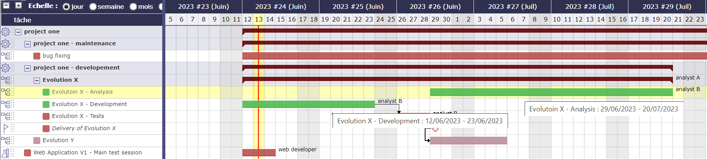
Malgré sa position prioritaire dans le WBS, l’activité Evolution X - Analyse est planifiée après l’activité Evolution X - Développement en raison de sa date de fin postérieure à celle de la seconde.
Mode de planification pour les tâches parentes
Les activités qui ont des sous-activités sont planifiées de manière lissée sur la durée constituée par les sous-activités.
Ce paramètre vous permet de modifier le comportement de ce lissage.
sans surbooking
Si la ressource est déjà utilisée, la durée de l’activité parente peut être prolongée.
avec surbooking inter-projets
Si la ressource est utilisée sur un autre projet, elle peut être surbookée afin de ne pas prolonger la durée de l’activité parente.
avec surbooking intra-projet
La durée sera préservée en surbookant éventuellement la ressource.
Afficher la ressource dans le Gantt
Sélectionner si la ressource peut être affichée dans un diagramme de Gantt, et le format d’affichage (nom, initiales ou aucun).
Appliquer le mode strict pour les dépendances
Définit si une tâche peut commencer le même jour que la tâche précédente.
Si oui, le successeur doit commencer le jour suivant.
Si non, le successeur peut démarrer le même jour.
Avancement manuel des activités à durée fixe
Choisir si l’avancement doit être calculé ou saisi manuellement.
Possibilité de gérer les activités en temps réel
Si oui, vous corrélez les charges validées, affectées, réelles et le reste à faire.
Autrement dit, la charge validée, la charge affectée et la charge révisée (réévaluée) seront toujours égales.
Dans ce cas, une option « activité dans le temps » est ajoutée aux types d’activités.
Avertissement
Cette option n’est pas disponible pour les activités gérées en unités de travail.
Mode de surbooking par défaut dans le calcul de planification
Vous pouvez automatiser le calcul de surbooking dans le diagramme de Gantt.
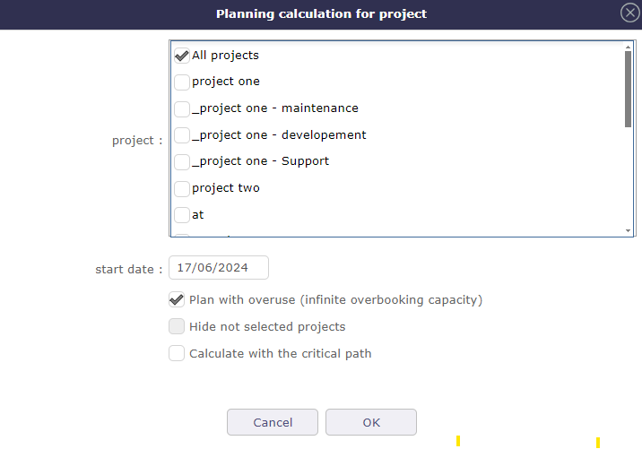
Calcul automatique du surbooking¶
Dans ce cas, la case à cocher sera automatiquement activée pour chaque calcul lancé.
Gérer la date de fin héritée
La date de fin peut être héritée des successeurs ou des parents.
Les barres du diagramme de Gantt apparaissent en rose plutôt qu’en rouge pour indiquer un retard si elles sont régies par des dates de fin héritées.
Que ce paramètre soit défini sur Oui ou Non, le dernier critère de priorité est l’ordre dans le WBS.
La priorisation par date de fin intervient juste avant ce critère par défaut.
Lorsque vous survolez la date de fin, si elle est héritée, une info-bulle indique l’élément dont elle est héritée.
Les interventions planifiées manuelles saisissent le travail en tant que
Choisir si le travail saisi dans la planification manuelle doit être enregistré en tant que travail réel ou travail planifié.
Effet de la capacité sur les interventions planifiées
Limiter la durée
Limiter la durée : une ressource avec une capacité de 0,8 ne peut être planifiée que sur une demi-journée de 0,5 j.
Déterminer la durée
Déterminer la durée : une ressource avec une capacité de 0,8 peut être planifiée sur 2 demi-journées de 0,4 j chacune.
Aucun
Une ressource avec une capacité de 0,8 peut être planifiée sur 2 demi-journées de 0,5 j chacune.
Nombre maximum d’éléments à afficher dans le planning Gantt
Vous choisissez le nombre de lignes affichées dans le diagramme de Gantt.
Jalons¶
Paramètres spécifiques pour la gestion des jalons.
Lier automatiquement le jalon
Permet optionnellement d’afficher l’élément lié au jalon (l’option ci-dessus doit être sur « oui » pour avoir accès à la sélection du jalon ciblé).
Définir le jalon depuis la version du produit
Permet optionnellement de récupérer automatiquement le jalon depuis le jalon de la version du projet.
Mettre à jour le responsable du jalon depuis le livrable
Mettre à jour automatiquement le responsable du jalon lorsque le responsable du livrable a changé.
Mettre à jour le responsable du jalon depuis l’entrant
Mettre à jour automatiquement le responsable du jalon lorsque le responsable du livrable a changé.
Mettre à jour le responsable du livrable depuis le jalon
Mettre à jour automatiquement le responsable du livrable lorsque le responsable du jalon a changé.
Mettre à jour le responsable de l’entrant depuis le jalon
Mettre à jour automatiquement le responsable de l’entrant lorsque le responsable du jalon a changé.
Affectation & Assignation¶
Paramètre spécifique pour le pool de ressources et le comportement sur les activités.
Affectation automatique des ressources du pool
Affectation automatique des ressources du pool lors de l’affectation d’un pool à un projet.
Affectation explicite
Lorsque vous affectez le pool au projet, les ressources apparaissent dans le tableau d’affectation en plus de la ligne du pool.
Et dans la liste déroulante des ressources pour l’assignation aux activités.
Affectation implicite
Lorsque vous affectez le pool au projet, seule la ligne du pool est affichée dans le tableau d’affectation.
Les ressources qui le composent sont cependant présentes dans la liste déroulante des ressources du tableau des assignations.
Non
Aucune des ressources composant le pool n’est visible dans le tableau des assignations et elles n’apparaîtront pas dans la liste déroulante des assignations.
Changement de statut lors de l’assignation
Lorsque vous assignez une ressource à un élément planifiable de ProjeQtOr, vous pouvez modifier le statut de l’élément lors de la création de l’assignation.
Pour que ce comportement soit effectif, vous devez spécifier quel statut déclenchera ce comportement. Voir : Statut
Lors de la création de l’assignation, le statut sera automatiquement modifié, sauf s’il était déjà dans le statut déclencheur.
Automatisation¶
Paramètres pour gérer les automatisations.
Consolider la charge et le coût validés
Sélectionner si la charge et le coût validés sont consolidés sur les activités parentes et donc pour les projets.
Sélectionner si la charge et le coût imputés sont consolidés sur les activités principales et donc sur les projets.
Ce sont donc les charges et coûts des sous-activités qui seront remontés vers les activités « mères » et donc vers les projets.
Jamais : Non consolidé. Les charges et coûts ne seront saisis et consolidés que manuellement.
Toujours : Les valeurs sont toujours remplacées sur les activités parentes et le projet. Si les activités parentes étaient renseignées, leurs valeurs seront écrasées par celles des activités filles.
Uniquement si renseigné : Remplace les valeurs uniquement si les parents sont renseignés. Une exception est faite si le parent est défini à 0 / « null ». Dans ce cas, le parent n’est pas écrasé.
Définir automatiquement le responsable s’il n’y a qu’une seule ressource :
Comportement relatif à la gestion du responsable, y compris l’initialisation automatique du responsable.
Définir automatiquement le responsable s’il n’est pas renseigné et que la seule ressource affectée au projet est disponible.
Affecter automatiquement le responsable au projet :
Créer automatiquement une affectation pour le responsable de projet sur le projet. Il doit être une ressource.
Définir automatiquement le responsable si nécessaire :
Définir automatiquement le responsable sur la ressource courante (lors de l’utilisation de l’élément) s’il n’est pas renseigné et qu’un responsable est requis (en respectant les droits d’accès).
Assigner automatiquement le responsable à l’activité :
Assigner automatiquement le responsable à l’activité.
Définir automatiquement le statut du parent :
Définir automatiquement le statut de l’élément parent (dans la structure WBS) en fonction du statut des éléments fils.
Ainsi, lorsque le premier élément fils passe à « en cours », le parent passe à « en cours », et lorsque tous les fils sont terminés, le parent passe à « terminé ».
Copier les éléments directement au statut « enregistré »
Lorsque vous copiez des éléments dans ProjeQtOr, de nombreuses options sont disponibles, ainsi que la possibilité de cocher une case qui placera l’élément copié dans le premier état de votre workflow.
Sans cette case activée, l’élément restera dans l’état intermédiaire « copié », ce qui pourrait entraîner des erreurs dans les calculs ou l’automatisation.
Activer ce paramètre permet de cocher automatiquement la case dans la fonction de copie d’éléments.
Onglet Affichage¶
Affichage¶
Comportement de l’interface graphique et paramètres d’affichage génériques.
Nom de l’instance
Modifier le nom de la fenêtre. Le nom apparaît en haut au centre de la fenêtre.
Nombre maximum de projets dans l’écran Aujourd’hui
Limiter l’affichage de la « liste du jour ». Les éléments sont généralement triés par date de création croissante.
Nombre maximum d’éléments à afficher dans les listes Aujourd’hui
Limiter l’affichage des éléments dans les sections de l’écran Aujourd’hui. Les éléments sont généralement triés par date de création croissante.
Filtrage rapide par statut
Permet de filtrer les éléments des listes par statut à l’aide de cases à cocher. Actualiser pour faire apparaître un nouvel état récemment créé.
Filtrage rapide par tags
Permet de filtrer les éléments des listes par tags en cochant les cases correspondantes.
Enregistrer les tags directement sous le nom de l’élément. Afficher les tags existants à l’aide du bouton bascule et filtrer vos listes par tags.
Masquer les heures sur les dates d’échéance des tickets
Cette option permet d’afficher les dates d’échéance sur les tickets sans l’heure.
Valeurs par défaut des paramètres utilisateur¶
Valeurs par défaut pour l’utilisateur
Nouvelle interface
Choisir entre l’interface v8.6 ou la nouvelle interface v9.0.
Couleurs du thème
L’interface v9.0 est composée de deux couleurs principales qui se déclinent dans toute l’application en différentes nuances et saturations pour conserver le même esprit de charte graphique.
Couleur principale de l’interface : choisir la couleur principale qui sera appliquée aux éléments architecturaux principaux.
Couleur secondaire de l’interface : choisir la couleur secondaire qui sera appliquée aux éléments de navigation et de mise en évidence.
Disques de couleurs : Vous disposez de disques de couleurs pré-enregistrés. L’un propose les couleurs du ProjeQtOr classique. Deux autres sont des propositions. Le quatrième reprend les couleurs que vous avez enregistrées dans les paramètres globaux de votre instance. Ils servent d’accélérateurs pour appliquer vos thèmes.
Langue par défaut
Choisir parmi 19 langues. Retour facile avec la traduction dans la langue cible.
Thème par défaut (disponible uniquement avec la version 8.6)
Plus de 30 thèmes disponibles.
Première page
Choix du premier écran visible après la connexion.
Verrouiller la première page
Permet à l’administrateur de sélectionner l’écran de son choix et de le bloquer pour les utilisateurs.
Ils ne verront pas ce paramètre dans leur menu de connexion ni dans les paramètres utilisateur > Affichage.
Mode d’affichage du menu supérieur
Vous choisissez comment vos favoris seront affichés : en texte, en icônes ou les deux.
Mode d’affichage du menu gauche
Le menu supérieur est invisible ou non à chaque connexion.
Choisir comment votre menu principal sera affiché : texte ou icônes et texte.
Astuce
Menu v9.0
Pour afficher ou masquer les icônes du nouveau menu, faites un clic droit sur le menu.
Taille des icônes dans le menu (disponible uniquement avec la version 8.6)
La taille des icônes est définie par défaut ; l’utilisateur peut modifier ces valeurs.
Affichage du menu supérieur (disponible uniquement avec la version 8.6)
Le menu supérieur est invisible ou non à chaque connexion.
Affichage du menu gauche (disponible uniquement avec la version 8.6)
Le menu supérieur est invisible ou non à chaque connexion.
Créer un nouvel élément en fenêtre contextuelle
Vous déterminez si le bouton de création global ouvrira une fenêtre contextuelle ou accédera directement à l’écran de l’élément à créer.
Afficher l’historique
Non
Oui
Oui avec le travail
À la demande via un bouton spécifique
Pour afficher ou masquer les icônes du nouveau menu, faites un clic droit sur le menu.
Le bouton sera alors affiché dans le menu de la zone de détail de chaque élément.
{kind=link}
Éditeur de texte enrichi
Choisir votre éditeur de texte préféré.
Valeur non applicable
Choix du symbole définissant les valeurs non applicables.
Dans la vue globale, la valeur du champ qui n’a pas de valeur applicable pour la colonne concernée affichera ce symbole.
Restreindre la liste des projets
Lors de la création d’un élément, le nom du projet reste celui sélectionné dans le sélecteur, ou au contraire propose un choix dans la liste globale des projets.
Export en XLS ou ODS
Choisir le format d’export : format Excel natif ou format ODS d’OpenDocument.
Affichage des notes en mode discussion
Par défaut, les notes sont affichées par ordre croissant de création. Pour consulter rapidement et facilement les réponses à certaines notes, cette option permet d’afficher les réponses sous les notes correspondantes avec une indentation à droite.
Afficher uniquement les notes dans le flux d’activité
Si oui, vous ne verrez pas les changements de statut ni les mises à jour d’éléments.
Recevoir ses propres e-mails
Si non, vous ne recevez pas les e-mails que vous créez.
Trier les notes par ordre croissant dans le modèle d’e-mail
Choix de l’affichage des notes dans le modèle d’e-mail.
Si OUI, les notes sont affichées par ordre croissant de création, du premier au dernier identifiant. Certaines notes contenant des réponses ne suivront donc pas nécessairement l’ordre d’affichage.
Si NON, les notes sont affichées telles qu’elles apparaissent à l’écran, avec les réponses sous les notes correspondantes.
Dans les modèles d’e-mail, vous pouvez appeler les notes de différentes manières.
Avec les codes ${NOTES} et ${NOTESTD}.
${NOTESTD} permet d’afficher les notes telles qu’elles sont par défaut.

Notes affichées par défaut dans les e-mails¶
${NOTE} permet d’afficher les notes selon un nouveau modèle de tableau.

Notes affichées en tableau dans les e-mails¶
Voir aussi
Lister les devis, commandes et factures sur le client
Afficher ou non la liste des éléments financiers liés au client sur l’écran de ce dernier.
Veuillez noter que le paramètre existe également côté utilisateur. Si celui-ci n’est pas non plus activé, les éléments financiers ne seront pas visibles.
Activer la mise à jour directe de l’exécution des cas de test
Afficher ou non la liste des éléments financiers liés au client sur l’écran de ce dernier.
Couleurs des activités par type dans la planification
Afficher ou non la liste des éléments financiers liés au client sur l’écran de ce dernier.
Format utilisé pour représenter les dates
Choisir le format de date à utiliser.
Format utilisé pour représenter l’heure
Choisir le format horaire 24 h ou 12 h pour afficher les heures dans l’application.
Onglet Références¶
Format de numérotation des références¶
Sections pour les formats de références
Format de préfixe pour la référence
Permet de définir des formats de référence pour les éléments, les documents et les factures.
Peut contenir un préfixe :
{PROJ} pour le code du projet,
{TYPE} pour le code du type,
{YEAR} pour l’année en cours,
{MONTH} pour le mois en cours.
Nombre de chiffres pour le numéro de référence
Indiquer le nombre de chiffres à afficher dans votre référence.
Modifier la référence lors d’un changement de type ou de projet
Modifier la référence lors d’un changement de type d’élément générera des numéros manquants dans la référence.
Format de référence des documents¶
Sections pour les formats de références des documents
Format de référence des documents
Le format peut contenir :
{PROJ} pour le code du projet,
{TYPE} pour le code du type,
{NUM} pour le numéro calculé pour la référence,
{NAME} pour le nom du document.
Vous pouvez autoriser ou interdire le téléchargement des fichiers verrouillés dans cette section.
Suffixe de référence de version
Le suffixe peut contenir {VERS} pour le nom de la version.
Séparateur pour le brouillon dans le nom de version
Choisir le signe de séparation pour le brouillon.
Conserver le nom du fichier téléversé
Si oui, le fichier est téléchargé avec le nom du fichier original.
Si non, le document prend le nom formaté selon la référence.
Interdire le téléchargement d’un document verrouillé
Interdire le téléchargement du document si oui est coché.
Ajouter une version de document sans téléverser de fichier
Possibilité d’ajouter une nouvelle version sans fichier.
Format de référence des factures¶
Sections pour les formats de références des factures
Format de référence des factures
Format de référence : peut contenir {NUME} pour le nom de la version.
Le code {NUM} ne peut être utilisé que pour le document.
Nombre de chiffres pour le numéro de facture
Choix du nombre de chiffres à afficher dans une facture.
Onglet Configuration¶
Produit et composant¶
Ce menu contient tous les paramètres de gestion de configuration.
Afficher les fonctionnalités métier
Filtre sur la date.
Afficher la langue dans Produit/Composant (Version)
Activer la langue.
Afficher les contextes dans Produit/Composant (Version)
Activer les contextes.
Afficher les appels d’offres sur les produits, composants, versions
Afficher une section listant les appels d’offres liés sur les produits, composants, versions de produit et versions de composant.
Inclure les sous-produits dans la structure
Inclure les sous-produits dans l’affichage de la structure produit (à plat ou non).
Versions¶
Cette section vous permet de gérer plus en détail le comportement des éléments liés aux versions.
Afficher les jalons de début et de livraison
Afficher les jalons de début et de livraison pour la version produit/composant et les dates de livraison dans la structure à plat.
Liste des activités sur la version du composant
Afficher la liste des activités.
Accès direct à la liste complète des produits / composants
Lors de la sélection d’un composant, accès direct à la liste complète (avec capacité de filtre), sans passer par la fenêtre contextuelle.
Format automatique du nom de version
Possibilité de choisir un format préformaté pour les noms de version.
Séparateur entre le nom et le numéro
Choisir le caractère séparateur pour les noms de version.
Abonnement automatique aux versions
Abonnement automatique aux versions ou composants lorsque vous vous abonnez à un produit ou un composant.
Types de copie de version de composant
Vous pouvez choisir entre :
Choix libre
Copier la structure depuis la version d’origine
Remplacer la version d’origine par la nouvelle version copiée
Activer la gestion de compatibilité des versions de produit
Afficher la section de compatibilité dans les détails de la version produit.
Afficher la version du produit sur la livraison
Permet de lier une livraison à une version de produit.
Trier la liste déroulante des versions par ordre décroissant
Modifier l’ordre de tri des versions dans la liste déroulante pour afficher les plus récentes en premier (ordre décroissant par nom).
Trier la composition et la structure des versions par type
Trier la composition et la structure des versions par type croissant et nom décroissant.
Gérer les composants sur les exigences
Gérer le composant et la version de composant cible sur les exigences.
Gérer les composants sur les demandes de changement
Gérer le composant et la version de composant cible sur les demandes de changement.
Ne pas ajouter les versions closes et livrées à un projet
Lors de l’ajout d’un produit à un projet, ne pas ajouter ses versions closes et livrées.
Autoriser les activités sur une version livrée
Inclure les versions de produits livrés dans la liste des versions de produit cibles pour les activités.
Définir automatiquement la version du composant si elle est unique
Définir automatiquement la version du composant s’il n’existe qu’une seule version du composant sélectionné liée à la version de produit sélectionnée.
Onglet Financier¶
Saisie des montants des dépenses¶
Paramètres pour choisir la méthode de saisie des montants de dépenses.
Mode de saisie des montants
Défini pour les éléments de dépenses : indique si les montants doivent être saisis hors taxes et calculés toutes taxes comprises, ou inversement.
Mode de saisie des lignes de facture
Défini pour les éléments de dépenses : indique si le total des lignes de facture alimente le total TTC ou HT. Ce paramètre est prioritaire s’il existe des lignes de facture.
Saisie des montants des recettes¶
Paramètres pour choisir la méthode de saisie des recettes.
Mode de saisie des montants
Défini pour les éléments de recettes : indique si les montants doivent être saisis hors taxes et calculés toutes taxes comprises, ou inversement.
Mode de saisie des lignes de facture
Défini pour les éléments de recettes : indique si le total des lignes de facture alimente le total TTC ou HT. Ce paramètre est prioritaire s’il existe des lignes de facture.
Automatisation financière¶
L’option Report des dépenses intervient lors de la génération automatique d’une dépense à partir d’une offre, d’une commande ou d’une facture.
Si la dépense est liée à une offre, une commande ET / OU une facture, elle est reportée sur les éléments liés. Cette mise à jour est récursive.
Si la dépense est générée à partir d’une facture, elle est reportée sur la commande liée à la facture et sur l’offre liée à la commande.
Gestion des revenus et des unités de travail¶
Paramètres utilisés dans le catalogue des unités de travail.
Nombre de complexités
Paramètre utilisé pour définir le nombre maximum par défaut utilisé dans le catalogue des unités de travail.
Copier le revenu dans le coût validé des activités.
Copier le revenu dans le coût validé des activités.
Activer la commande de travail.
Vous liez vos activités gérées par les unités de travail à une commande.
Celle-ci sera décrémentée des unités de travail déjà réalisées et facturées. Vous pouvez ensuite facturer précisément le travail déjà effectué.
Traduction¶
Choisir le comportement des unités monétaires dans votre région
Devise
Choisir le symbole affiché sur chaque champ monétaire.
Position de la devise pour l’affichage des coûts
Le symbole se place avant ou après chaque champ monétaire.
Multi-devise¶
Il est possible de définir une devise locale pour chaque projet. Le projet porte le taux de conversion entre la devise globale et la devise locale.
Autoriser les devises locales par projet
Permet de définir une devise locale pour chaque projet.
Les sous-projets héritent automatiquement de la devise locale.
Les données sont saisies en devise locale et consolidées en devise globale.
Afficher les données en devise globale
Afficher les données en devise globale lorsque le projet utilise une devise locale.
Onglet Messagerie¶
Envoi d’e-mails¶
Paramètres permettant à l’application d’envoyer des e-mails.
Définir l’adresse e-mail de l’administrateur, avec la possibilité de choisir une adresse « De » et « Répondre à » différente, ainsi que le nom d’affichage.
Vous devez configurer les informations de connexion avec les identifiants fournis par votre fournisseur de service e-mail.
La taille maximale pour l’envoi d’e-mails est exprimée en octets par défaut si vous ne précisez pas les unités.
Vous pouvez utiliser des kilooctets (Ko), des mégaoctets (Mo) et des gigaoctets (Go) avec des valeurs entières.
La taille doit être inférieure ou égale au paramètre PHP « upload_max_filesize ».
Réponses aux e-mails¶
Pour répondre à ces e-mails, vous devez configurer l’import automatique des réponses dans l”onglet Automatisation ; sinon, elles ne seront pas traitées par l’application.
Une réponse à un e-mail sera ajoutée à l’élément existant sous forme de note et, si un fichier joint est attaché à l’e-mail de réponse, le fichier sera également ajouté aux pièces jointes.
Astuce
1 Ko représentera 1 024 octets.
Titres des e-mails¶

Section Titres des e-mails¶
Paramètres pour définir le titre de l’e-mail en fonction de l’événement.
Il est possible d’utiliser des champs spéciaux pour appeler une fonction ou des données du projet.
Regroupement automatique des e-mails¶
Paramètres pour définir si le regroupement d’e-mails est actif ou non.
Activer le regroupement des e-mails
Lorsque le regroupement des e-mails est activé, les e-mails automatiques envoyés dans la période définie sont regroupés en un seul e-mail.
Par exemple, lorsque le statut d’un élément a été modifié plusieurs fois en moins de X secondes, vous ne recevrez pas un e-mail pour chaque changement d’état.
Période de regroupement (en secondes)
Définit la période (en secondes) durant laquelle, si un e-mail est envoyé après un autre sur le même élément, ils sont regroupés.
Les e-mails sont alors regroupés en un seul.
Comment traiter les différents formats
Si les e-mails regroupés font référence à différents modèles, vous pouvez :
Envoyer tous les messages, un pour chaque modèle.
Envoyer uniquement le dernier message.
Fusionner tous les messages et envoyer un seul e-mail.
Vous pourrez voir cet e-mail dans l’écran e-mails à envoyer dans le menu Outils.
Tester la configuration e-mail¶
Vous pouvez tester les paramètres d’envoi de vos e-mails.
Envoyer un e-mail à
Envoyer un e-mail pour vérifier la configuration SMTP.
Avertissement
Cette opération enregistre les paramètres globaux.
Onglet Authentification¶
Utilisateur et mot de passe¶
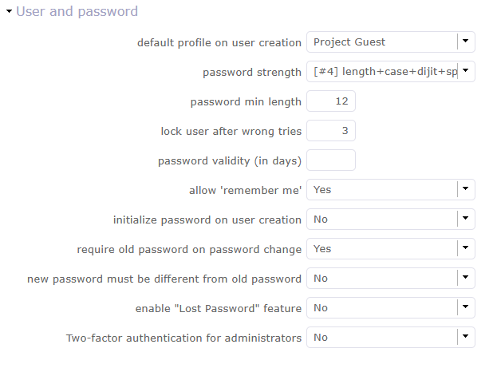
Écran d’authentification¶
Paramètres pour gérer le comportement de la connexion.
Profil par défaut lors de la création d’un utilisateur
Vous pouvez choisir le profil et le mot de passe par défaut lors de la création d’une nouvelle ressource/utilisateur/contact.
Ce profil peut être modifié sur chaque projet.
Robustesse du mot de passe
Vous définissez la complexité de votre mot de passe.
Longueur du mot de passe, utilisation de caractères spéciaux ou numériques.
Longueur minimale du mot de passe
Vous définissez la longueur de votre mot de passe.
Verrouiller l’utilisateur après des tentatives incorrectes
Vous pouvez choisir de bloquer l’utilisateur après x tentatives de connexion.
Validité du mot de passe (en jours)
Vous pouvez définir la période de validité de votre mot de passe. À l’expiration de cette période, vous devrez renouveler votre mot de passe.
Autoriser « Se souvenir de moi »
Vous pouvez afficher ou non la case à cocher « Se souvenir de moi » sur l’écran de connexion.
Initialiser le mot de passe lors de la création d’un utilisateur
Vous pouvez initialiser le mot de passe lors de la création d’un utilisateur. L’application définira un nouveau mot de passe avec une valeur aléatoire.
Vous pouvez réinitialiser tous les mots de passe avec la fonction de mise à jour multiple.
Exiger l’ancien mot de passe lors du changement de mot de passe
ProjeQtOr vérifie l’ancien mot de passe lors d’un changement de mot de passe.
Le nouveau mot de passe doit être différent de l’ancien
Si vous avez une politique de changement régulier de mot de passe, vous pouvez activer l’option interdisant de réutiliser le même mot de passe.
Activer la fonctionnalité « Mot de passe oublié »
Cette fonctionnalité permet à un utilisateur de réinitialiser son propre mot de passe.
Elle est activée via un paramètre global, désactivée par défaut, afin que les administrateurs qui ne souhaitent pas l’utiliser puissent la désactiver.
Un e-mail contenant l’URL de la page de réinitialisation du mot de passe et un jeton unique pour chaque demande sera envoyé.
Le jeton sera valide pendant 10 minutes.
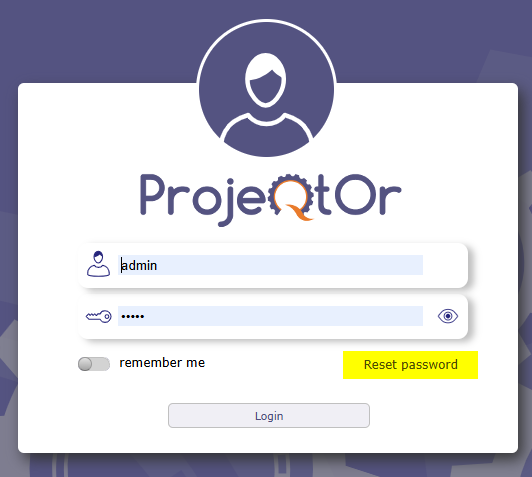
Authentification à deux facteurs pour les administrateurs
L’authentification à deux facteurs est disponible via OTP (mot de passe à usage unique).
Lorsque cela est requis, un code est envoyé à l’utilisateur par e-mail.
L’utilisateur doit ensuite saisir ce code pour vérifier son identité.
Ce code est enregistré avec l’identifiant de l’utilisateur demandeur et l’horodatage de la demande.
Validité du code
Si un autre code existe déjà pour le même utilisateur, le précédent est désactivé (invalidé) ;
Limite de 3 demandes par heure : si 3 demandes ont déjà été effectuées au cours de la dernière heure (T - 60 min), aucun nouveau code n’est généré ;
Le code est invalidé une fois utilisé ;
Durée de validité limitée : si l’utilisateur tente d’utiliser un code généré depuis plus de 10 minutes, l’accès est refusé ;
Note
L’OTP ne sera pas nécessairement requis à chaque connexion.
Phase de validation
L’OTP est requis lorsqu’un utilisateur valide un document ;
L’OTP est obligatoire pour les utilisateurs ayant un profil administrateur ;
L’OTP est requis pour les connexions directes lorsque le SSO est activé.
Paramètres de gestion LDAP¶
Tous les paramètres nécessaires pour connecter vos instances ProjeQtOr à votre annuaire LDAP d’entreprise.
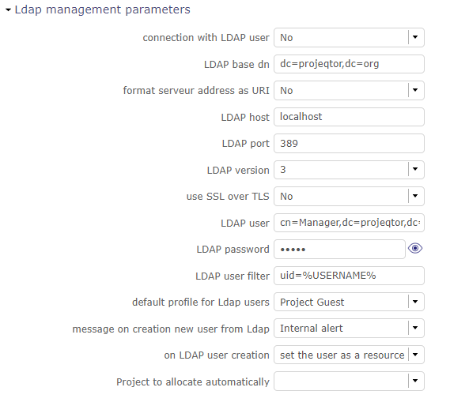
LDAP¶
Définir le DN de base, l’hôte, le port, la version…
Profil par défaut pour les utilisateurs LDAP, message lors de la création d’un nouvel utilisateur depuis LDAP,
Actions lors de la création d’un utilisateur LDAP
Projet à affecter automatiquement…
Authentification unique SAML2¶
L’authentification unique est une méthode permettant à un utilisateur d’accéder à plusieurs applications informatiques (ou sites sécurisés) en effectuant une seule authentification.

Avec l’authentification unique, vous ne passez pas par l’écran de connexion de ProjeQtOr mais par un écran dédié à l’authentification unique.¶
Lorsqu’il est connecté au service SSO, celui-ci indique à chaque application que l’utilisateur est connecté.
Cela évite de devoir se connecter aux applications une par une.
Concrètement, le site ou service auquel l’utilisateur tente de se connecter envoie une requête au serveur ou au site du fournisseur d’identité.
Celui-ci demande si l’utilisateur est connecté. Si c’est le cas, il transmet les informations.
Selon le protocole utilisé, les deux sites échangent des clés, des signatures et/ou d’autres informations pour vérifier l’identité de l’utilisateur.
Une connexion sécurisée avec le système OTP peut être activée.
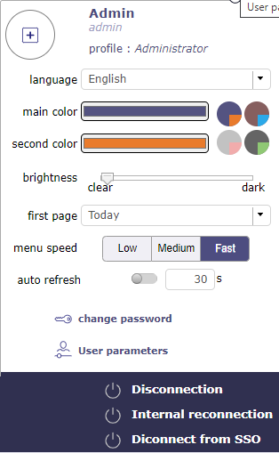
Écran de déconnexion¶
Lorsque vous souhaitez vous déconnecter de ProjeQtOr avec la méthode SSO, l’écran de déconnexion vous propose plusieurs options.
Déconnexion locale de ProjeQtOr. Je ne quitte pas ma session SSO.
Reconnexion interne : je me reconnecte à ProjeQtOr localement. Je quitte ma session SSO. Je dois m’identifier à nouveau.
Déconnexion SSO. Je quitte ma session SSO. Je dois m’identifier à nouveau.
Paramètres
Il s’agit d’une connexion SSO via le protocole SAML2.
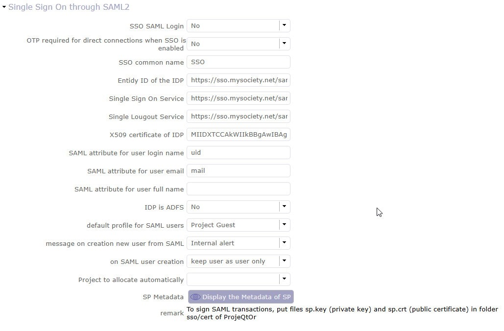
Paramètres globaux : LDAP¶
Définir l’identifiant d’entité, le certificat IDP, l’authentification unique et la déconnexion…
Profil par défaut pour les utilisateurs, message lors de la création d’un nouvel utilisateur depuis SAML,
Et quelques paramètres pour les utilisateurs.
Onglet Automatisation¶
Gestion du service automatisé (CRON)¶
Paramètres pour le processus Cron.
Fréquence définie pour ces fonctions automatiques
Il gère :
Génération d’alertes : Fréquence de recalcul des valeurs des indicateurs.
Vérification des alertes : Fréquence à laquelle le navigateur côté client vérifie si une alerte doit être affichée.
Import : Paramètres d’import automatique comme ci-dessous.
Avertissement
Le répertoire de travail du Cron doit être défini en dehors du chemin web.
Archivage automatique de l’historique¶
Cette section vous permet de gérer le comportement de l’historique.
Archiver l’historique plus ancien que (en jours)
Détermine la fréquence d’archivage de votre historique.
Heure de début de l’archivage quotidien
Choisir l’heure à laquelle l’archivage quotidien démarrera.
Archiver tout l’historique des éléments inactifs
Choisir si l’historique des éléments clos doit être archivé ou non.
Import automatique de fichiers¶
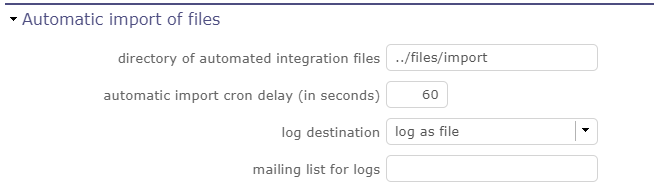
Import automatique de fichiers¶
Paramètres d’import automatique pour les processus cron.
Avertissement
Le répertoire des fichiers d’intégration automatisée doit être défini en dehors du chemin web.
Import automatique des réponses aux e-mails¶
Ce paramètre n’existe plus. Pour définir la boîte de réception IMAP pour la réception des nouveaux tickets et notes, utilisez la fonctionnalité Boîte de réception.
Voir aussi
Boîte de réception pour les tickets<ticket-fromemail>`
Boîte de réception pour les imports<import-mailbox-tool>`
Calcul automatique de la planification¶

Activer ou désactiver cette fonctionnalité par un simple clic.¶
Calcul différentiel
La planification du projet n’est recalculée que pour les projets qui en ont besoin. Une ou plusieurs données ont été modifiées dans le projet, un nouveau calcul est donc attendu.
Calcul complet
La planification de tous les projets est recalculée.
Alimentation automatique du travail réel
Vous renseignez automatiquement le travail réel à partir du travail planifié jusqu’à une date donnée.
Le calcul automatique des projets à partir du lendemain de cette date est déclenché.
Le travail réel est automatiquement saisi à partir du travail planifié jusqu’à la veille du démarrage du calcul de planification.
Avertissement
Pour des raisons de sécurité et afin d’éviter tout chevauchement avec une saisie manuelle du réel, si la ressource dispose déjà d’un travail réel pour une date donnée, le travail planifié existant n’est pas copié dans le réel.
Pour chaque travail planifié trouvé, si aucun travail n’existe pour la ressource concernée à la date du travail planifié, ce travail planifié est copié en tant que travail réel.
Le travail réel saisi automatiquement sera marqué (libellé de type zone technique) afin de distinguer l’alimentation automatique de la saisie manuelle.
Cette zone ne sera pas traitée pour les rendus à l’écran, mais permettra d’analyser tout comportement inattendu.
Fréquence
Sélectionnez la fréquence dans le calendrier en cliquant sur le bouton paramètres définis et choisissez le planning, le jour, le mois.
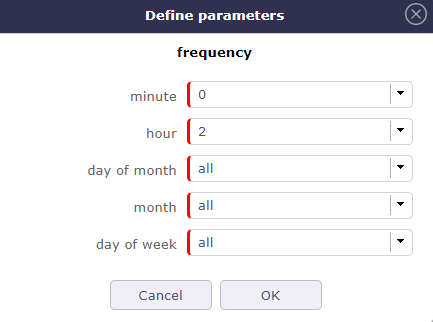
Définir les paramètres¶
Date de début pour
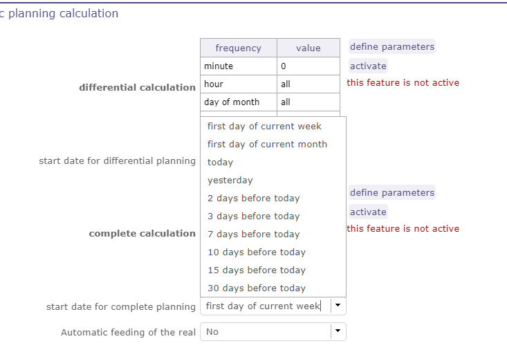
Légende¶
Sélectionner la date à partir de laquelle vous souhaitez recalculer le(s) projet(s) par rapport à la date du jour.
Génération d’alertes si le travail réel n’est pas saisi¶
Paramètres spécifiques pour les alertes basées sur un profil.
Un e-mail est envoyé à la date convenue.
Cliquer sur le bouton Définir les paramètres.
Sélectionner la fréquence du calendrier avec laquelle les e-mails seront générés et envoyés au profil.
Voir : Gestion du service automatisé (CRON) pour définir la fréquence d’envoi.
En plus de la fréquence d’envoi, vous pouvez affiner la génération avec plusieurs options supplémentaires.
Contrôler la saisie jusqu’au
Sélectionner la période à contrôler : jour courant, jour précédent ou jours suivants.
Nombre de jours à contrôler
Choisir le nombre de jours qui seront contrôlés.
Envoyer une alerte à la ressource
Choisir le mode d’envoi des alertes : alerte interne, e-mail, les deux ou aucun.
Imputations incomplètes uniquement
L’objectif est de pouvoir envoyer des alertes sur les charges uniquement si la saisie est incomplète, et non si elle est supérieure à la capacité de la ressource.
Avec l’option cochée, lors de la génération des alertes, une saisie supérieure à la capacité de la ressource ne déclenche pas d’alerte.
Avertissement
Tous les jours de la semaine, ouvrés ou non, sont pris en compte.
Les jours non ouvrés dans la saisie du travail réel ne déclencheront pas d’alerte.
Onglet Système¶
Fichiers et répertoires¶
Définition des répertoires et autres paramètres utilisés pour la gestion des fichiers et des documents.
Renseigner la taille et les chemins d’accès au stockage de vos documents et pièces jointes.
Avertissement
Le répertoire des pièces jointes et le Répertoire racine des documents doivent être définis en dehors du chemin accessible via le web.
Le répertoire temporaire pour les rapports doit rester accessible via le web.
Données de traduction¶
Paramètres pour définir les jeux de caractères, leur encodage, leur comportement… pour l’enregistrement des fichiers sur le serveur.
Jeu de caractères pour l’enregistrement des fichiers sur le serveur
Laisser vide pour les serveurs Linux, les noms de fichiers seront stockés en UTF-8.
Pour un serveur sous Windows, définir le jeu de caractères comme « windows-1252 » (pour l’Europe occidentale) ou tout autre jeu correspondant à votre localisation.
Fuseau horaire
Sélectionnez votre fuseau horaire.
Séparateur pour les fichiers CSV
Choisir le séparateur de champs pour les exports CSV.
Export CSV en format UTF-8
Conserver l’UTF-8 pour les fichiers CSV exportés. Si défini sur non, l’encodage sera en CP1252 (recommandé pour Windows en anglais et les langues d’Europe occidentale).
Sécurité - Message lors de la détection d’une tentative d’intrusion¶
Pour sécuriser la solution et éviter les attaques de type Cross Site Scripting, nous avons mis en place un jeton CSRF.
Configurer l’e-mail qui sera notifié si une tentative d’exploitation d’une faille de sécurité est détectée.
Plusieurs possibilités d’envoi sont configurables.
Divers
Paramètres pour la mise à jour.
Vérifier la disponibilité d’une nouvelle version
Vérification automatique (ou non) de l’existence d’une nouvelle version de l’outil (seul l’administrateur est informé).
Export PDF¶
Paramètres de base pour les exports PDF.
Limite de mémoire pour la génération de PDF.
Taille en Mo. Une valeur trop petite peut entraîner des erreurs PDF, mais une valeur trop grande peut faire planter le serveur.
Police pour l’export PDF.
Freesans offre une grande portabilité pour les caractères non ANSI — Helvetica produit des fichiers PDF plus légers.
Connexion SSL à la base de données¶
Permet de configurer une connexion SSL sécurisée :
Clé SSL
Certificat SSL
Autorité de certification SSL
Saisir le chemin vers les fichiers correspondants pour activer la connexion SSL à la base de données.
Avertissement
Veillez à ce que ces fichiers existent et soient des fichiers SSL valides.
Si les valeurs sont incorrectes, l’application ne fonctionnera plus et vous devrez corriger manuellement les paramètres dans la base de données.
Champs spéciaux¶
Les champs spéciaux peuvent être utilisés dans le titre et le corps de l’e-mail pour être remplacés.
par les valeurs de l’élément :
${dbName} le nom d’affichage de l’instance
${id} l’identifiant de l’élément
${item} la classe de l’élément (par exemple « Ticket »)
${name} le nom de l’élément
${status} le statut actuel de l’élément
${project} le nom du projet de l’élément
${type} le type de l’élément
${reference} la référence de l’élément
${externalReference} la référence externe de l’élément
${issuer} le nom de l’émetteur de l’élément
${responsible} le nom du responsable de l’élément
${sender} le nom de l’expéditeur de l’e-mail
${sponsor} le nom du commanditaire du projet
${projectCode} le code du projet
${contractCode} le code de contact du projet
${customer} le client du projet
${url} l’URL pour accès direct à l’élément
${login} le nom d’utilisateur
${password} le mot de passe de l’utilisateur
${adminMail} l’adresse e-mail de l’administrateur